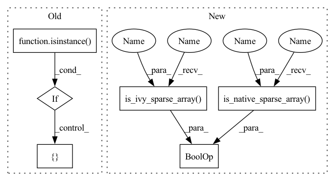

Pattern ID :38353
Before Change
for row_split in x.nested_row_splits:
new_struc.append(row_split)
return new_struc
elif isinstance( x, tf.SparseTensor) :
return [x.indices, x.values, x.dense_shape]
elif isinstance(x, torch.Tensor):
if x.layout == torch.sparse_coo:
x = x.coalesce()
return [x.indices(), x.values(), ivy.native_array(x.size(), dtype="int64")]
elif x.layout == torch.sparse_csr:
return [
x.crow_indices(),
x.col_indices(),
x.values(),
ivy.native_array(x.size(), dtype="int64")After Change
for row_split in x.nested_row_splits:
new_struc.append(row_split)
return new_struc
elif ivy.is_ivy_sparse_array(x) or ivy.is_native_sparse_array(x) :
return ivy.native_sparse_array_to_indices_values_and_shape(x)
In pattern: SUPERPATTERN
Frequency: 4
Non-data size: 6
Instances Fragment ID: 109624137
Project Name: unifyai/ivy
Commit Name: a4795de77ccf726e8d5bc9f4735b56359d83def8
Time: 2022-10-26
Author: agni.iyer14@alumni.imperial.ac.uk
File Name: ivy/functional/frontends/tensorflow/nest.py
M Class Name: AnonimousClass
N Class Name: AnonimousClass
M Method Name: _flatten_composite_array(1)
N Method Name: _flatten_composite_array(1)
M Parent Class:
N Parent Class:
M File Name: ivy/functional/frontends/tensorflow/nest.py
N File Name: ivy/functional/frontends/tensorflow/nest.py
M Start Line: 22
M End Line: 36
N Start Line: 20
N End Line: 21
Before Change
for row_split in x.nested_row_splits:
new_struc.append(row_split)
return new_struc
elif isinstance( x, tf.SparseTensor) :
return [ x.indices, x.values, x.dense_shapeAfter Change
for row_split in x.nested_row_splits:
new_struc.append(row_split)
return new_struc
elif ivy.is_ivy_sparse_array(x) or ivy.is_native_sparse_array(x) :
return ivy.native_sparse_array_to_indices_values_and_shape(x)
Fragment ID: 109624153
Project Name: unifyai/ivy
Commit Name: a4795de77ccf726e8d5bc9f4735b56359d83def8
Time: 2022-10-26
Author: agni.iyer14@alumni.imperial.ac.uk
File Name: ivy/functional/frontends/tensorflow/nest.py
M Class Name: AnonimousClass
N Class Name: AnonimousClass
M Method Name: _flatten_composite_array(1)
N Method Name: _flatten_composite_array(1)
M Parent Class:
N Parent Class:
M File Name: ivy/functional/frontends/tensorflow/nest.py
N File Name: ivy/functional/frontends/tensorflow/nest.py
M Start Line: 22
M End Line: 36
N Start Line: 20
N End Line: 21
Before Change
def _is_composite_array(x):
if isinstance(x, (tf.SparseTensor, tf.RaggedTensor)):
return True
if isinstance( x, torch.Tensor) :
if x.layout in [ torch.sparse_coo, torch.sparse_csrAfter Change
def _is_composite_array(x):
if isinstance(x, tf.RaggedTensor):
return True
if ivy.is_ivy_sparse_array(x) or ivy.is_native_sparse_array(x) :
return True
return False
Fragment ID: 109624150
Project Name: ivy-dl/ivy
Commit Name: a4795de77ccf726e8d5bc9f4735b56359d83def8
Time: 2022-10-26
Author: agni.iyer14@alumni.imperial.ac.uk
File Name: ivy/functional/frontends/tensorflow/nest.py
M Class Name: AnonimousClass
N Class Name: AnonimousClass
M Method Name: _is_composite_array(1)
N Method Name: _is_composite_array(1)
M Parent Class:
N Parent Class:
M File Name: ivy/functional/frontends/tensorflow/nest.py
N File Name: ivy/functional/frontends/tensorflow/nest.py
M Start Line: 8
M End Line: 13
N Start Line: 7
N End Line: 11